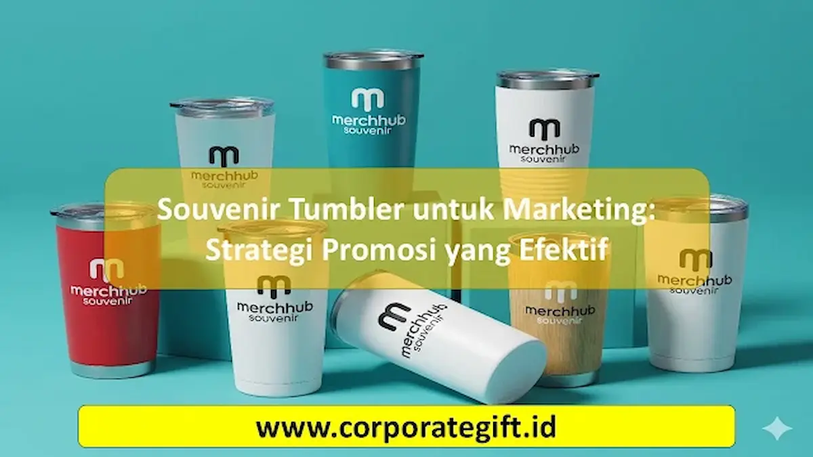

Corporate Gifts ID - Dalam lanskap pemasaran modern yang semakin kompetitif, perusahaan dituntut untuk menghadirkan strategi promosi yang tidak hanya menarik perhatian seketika, namun juga mampu menciptakan impresi berkelanjutan. Souvenir tumbler untuk marketing telah terbukti menjadi salah satu media promosi paling efektif karena memadukan fungsionalitas tinggi, nilai guna harian, dan daya tahan jangka panjang.
Tumbler custom berlogo perusahaan yang dibagikan kepada klien, mitra bisnis, karyawan, atau audiens acara bukan sekadar hadiah seremonial. Barang ini bertransformasi menjadi papan iklan berjalan yang menghadirkan eksposur visual konsisten setiap kali penerimanya menikmati kopi, teh, atau air mineral di meja kerja, ruang rapat, pusat kebugaran, hingga perjalanan dinas luar kota.
Poin Kunci Keunggulan Souvenir Tumbler Marketing:
- Retensi Penggunaan Harian: Digunakan berulang kali oleh penerima sehingga menghasilkan ribuan impresi merek alami tanpa biaya iklan berulang.
- Citra Ramah Lingkungan (ESG): Mendukung gaya hidup zero-waste dan pengurangan botol plastik sekali pakai sejalan dengan prinsip keberlanjutan korporat.
- Fleksibilitas Desain & Branding: Area permukaan yang luas memungkinkan kustomisasi logo via laser grafir presisi tinggi maupun cetak UV full-color.
- Nilai Persepsi Tinggi: Material stainless steel food grade SUS 304 memberikan kesan mewah, eksklusif, dan profesional bagi penerimanya.
Mengapa Souvenir Tumbler Efektif untuk Marketing Promosi
Efektivitas promosi melalui merchandise sangat ditentukan oleh frekuensi interaksi audiens dengan barang tersebut. Dibandingkan brosur kertas atau souvenir pajangan yang mudah terbuang dan terlupakan, souvenir tumbler menghadirkan keunggulan pemasaran tak tertandingi:
- Digunakan Secara Konsisten dalam Aktivitas Harian: Tumbler menjadi kebutuhan wajib para profesional perkantoran. Setiap kali tumbler diletakkan di meja kerja atau dibawa ke ruang rapat, logo perusahaan Anda terpampang nyata di hadapan kolega dan mitra bisnis mereka.
- Membangun Citra Profesional dan Kredibel: Memberikan hadiah berkualitas tinggi menunjukkan bahwa institusi Anda memiliki standar profesionalisme yang serius dan menghargai relasi kerja sama.
- Media Promosi Berkelanjutan Jangka Panjang: Satu unit tumbler berkualitas mampu bertahan 2 hingga 5 tahun. Ini berarti biaya akuisisi impresi merek (cost-per-impression) menjadi sangat rendah dibandingkan kanal iklan digital berbayar.
- Mendukung Nilai Keberlanjutan Korporat (Eco-Friendly): Penggunaan tumbler reusable mencerminkan komitmen perusahaan terhadap pelestarian lingkungan, aspek yang kini sangat dinilai positif oleh generasi profesional muda dan investor.
- Kemudahan Personalisasi Sesuai Identitas Brand: Kombinasi warna bodi, logo grafir, hingga nama individual penerima menciptakan keterikatan emosional yang kuat antara penerima dan merek perusahaan Anda.
Tips Memilih Souvenir Tumbler yang Tepat untuk Promosi Perusahaan
Agar investasi promosi melalui souvenir tumbler memberikan dampak maksimal, ada beberapa pertimbangan teknis dan strategis yang wajib diperhatikan oleh tim pengadaan atau bagian pemasaran:
- Kenali Karakter dan Profil Target Audiens: Sesuaikan model tumbler dengan audiens target. Untuk jajaran direksi atau klien VIP, pilih vacuum flask beraksen bambu atau model slim minimalist bernuansa monokrom. Untuk peserta event seminar massal, tumbler insulasi standar berkapasitas 500 ml menjadi pilihan paling proporsional.
- Pilih Standar Material Food Grade Terverifikasi: Pastikan material bodi terbuat dari stainless steel SUS 304 bebas BPA (BPA Free) yang tahan karat, aman untuk minuman panas maupun dingin, serta tidak meninggalkan bau logam.
- Tentukan Kapasitas yang Ergonomis: Kapasitas 350 ml hingga 500 ml adalah ukuran paling ideal karena mudah dimasukkan ke dalam tote bag, ransel kerja, maupun cup holder kendaraan.
- Pertimbangkan Fitur Tambahan yang Bernilai: Pilihan fitur seperti tutup kedap anti-bocor (leak-proof lid), termometer LED pengukur suhu digital pada tutup botol, atau saringan teh infuser dapat meningkatkan daya tarik souvenir secara signifikan.
- Sinkronkan Alokasi Anggaran dan Skala Acara: Hitung estimasi kuantitas kebutuhan secara cermat untuk mendapatkan efisiensi harga grosir B2B terbaik dari vendor terpercaya.

Variasi warna dan desain tumbler custom untuk strategi marketing korporat berkesan.
Ide Desain dan Personalisasi Souvenir Tumbler untuk Branding
Desain visual adalah kunci pembeda antara tumbler promosi biasa dengan tumbler eksklusif yang dibanggakan penggunanya. Berikut adalah beberapa konsep pendekatan desain yang terbukti sukses memikat klien dan mitra bisnis:
- Minimalis dan Elegan: Penempatan logo berukuran proporsional dengan sentuhan laser engraving monokromatik pada bodi matte finish menghasilkan tampilan mewah tanpa kesan terlalu mencolok.
- Palet Warna Selaras dengan Panduan Identitas Brand (Brand Guidelines): Memilih warna dasar tumbler yang senada dengan warna identitas korporat memperkuat pengenalan visual secara konsisten.
- Personalisasi Nama Penerima (Individual Name Engraving): Menyematkan nama penerima di bawah logo perusahaan memberikan sentuhan personal eksklusif yang sangat dihargai oleh karyawan maupun tamu kehormatan.
- Pesan Inspiratif atau Tagline Tematik Acara: Menambahkan kutipan motivasi kerja atau tema kampanye promosi dapat meningkatkan resonansi emosional audiens terhadap pesan yang diusung.
- Paket Bundling Gift Set Terpadu: Menggabungkan tumbler dengan item pelengkap seperti buku agenda kulit custom, pulpen metal, atau card holder dalam satu kemasan kotak rigid hardbox eksklusif.
Tabel Komparasi Jenis Tumbler untuk Marketing Promosi
Berikut adalah perbandingan karakteristik model tumbler promosi terpopuler untuk memudahkan tim procurement dalam memilih opsi terbaik sesuai kebutuhan acara:
| Kategori Tumbler | Material Utama | Retensi Suhu | Teknik Branding Ideal | Rekomendasi Acara |
|---|---|---|---|---|
| Smart LED Vacuum Flask | Stainless Steel SUS 304 + Sensor LED | Panas/Dingin 8-12 Jam | Laser Engraving / UV Print | Hadiah Klien VIP, Welcome Kit Eksekutif |
| Classic Stainless Sport | Stainless Steel SUS 201/304 | Panas/Dingin 4-8 Jam | Sablon Rotary / Laser Grafir | Event Seminar Massal, Gathering Karyawan |
| Eco-Friendly Bamboo Tumbler | Lapisan Kayu Bambu Alami + SUS 304 | Panas/Dingin 6-10 Jam | Laser Engraving Kayu Presisi | Kampanye ESG, Souvenir Direksi & Stakeholder |
| Desk Coffee Mug Double-Wall | Stainless SUS 304 + Pegangan Ergonomis | Panas/Dingin 4-6 Jam | UV Print High-Gloss / Laser | Merchandise Ruang Rapat, Hadiah Akhir Tahun |
Kustomisasi Teknik Cetak dan Kemasan Packaging Eksklusif
Kualitas visual akhir sangat ditentukan oleh keselarasan antara teknik cetak logo dan kemasan presentasi hadiah. Dua teknik branding yang paling direkomendasikan untuk souvenir tumbler adalah:
- Laser Engraving (Grafir Laser): Mengikis permukaan cat terluar tumbler untuk menampilkan kilau logam asli stainless steel. Teknik ini bersifat permanen, tidak akan luntur atau terkelupas meski dicuci berkali-kali, serta memberikan sentuhan visual formal nan mewah.
- UV Flatbed / Rotary Printing: Sangat ideal untuk logo perusahaan yang memiliki gradasi warna rumit atau multi-warna. Hasil cetakan memiliki detail tajam dan warna cerah berdaya rekat tinggi.
Selain teknik cetak, jangan lupakan faktor unboxing experience. Mengemas tumbler dalam kotak rigid hardbox berlapis kain satin atau kraft paper box berdesain khusus dengan pita warna brand akan meningkatkan persepsi nilai hadiah secara instan saat pertama kali diserahkan kepada penerima.
Kesimpulan Strategis Souvenir Tumbler Marketing
Pemanfaatan souvenir tumbler untuk marketing promosi merupakan langkah investasi strategis yang teruji memberikan keuntungan ganda bagi perusahaan. Tidak hanya memperkuat identitas visual dan brand recall harian di kalangan konsumen serta mitra kerja, tumbler berkualitas juga merefleksikan nilai-nilai kepedulian lingkungan yang modern.
Pastikan Anda bermitra dengan vendor resmi yang berpengalaman menyediakan kontrol kualitas ketat, material food grade berstandar prima, serta layanan konsultasi desain profesional agar setiap paket promosi yang Anda distribusikan menghasilkan dampak pemasaran optimal.